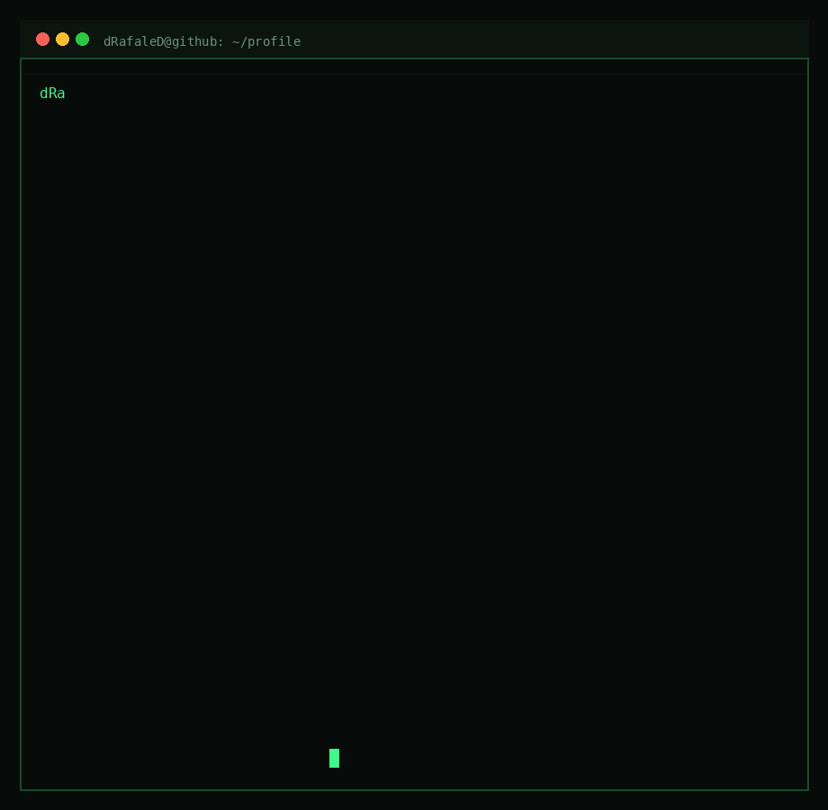
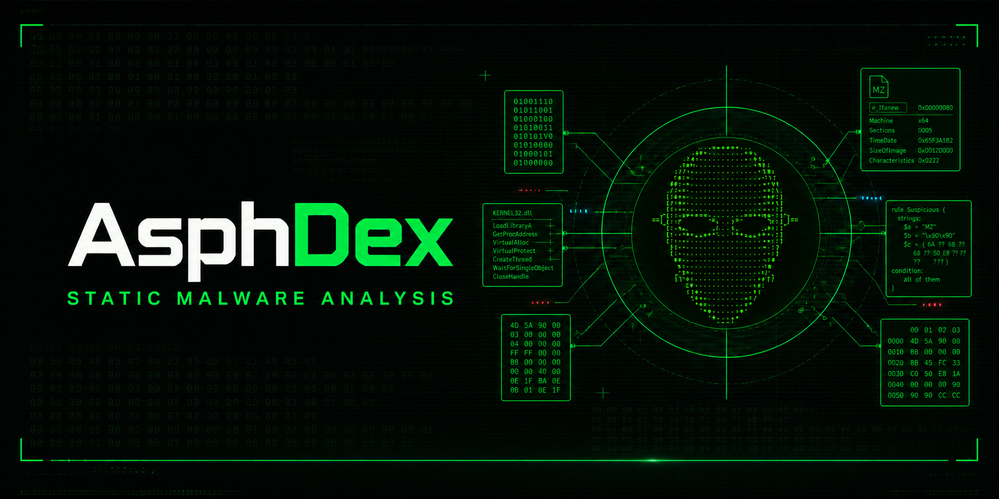
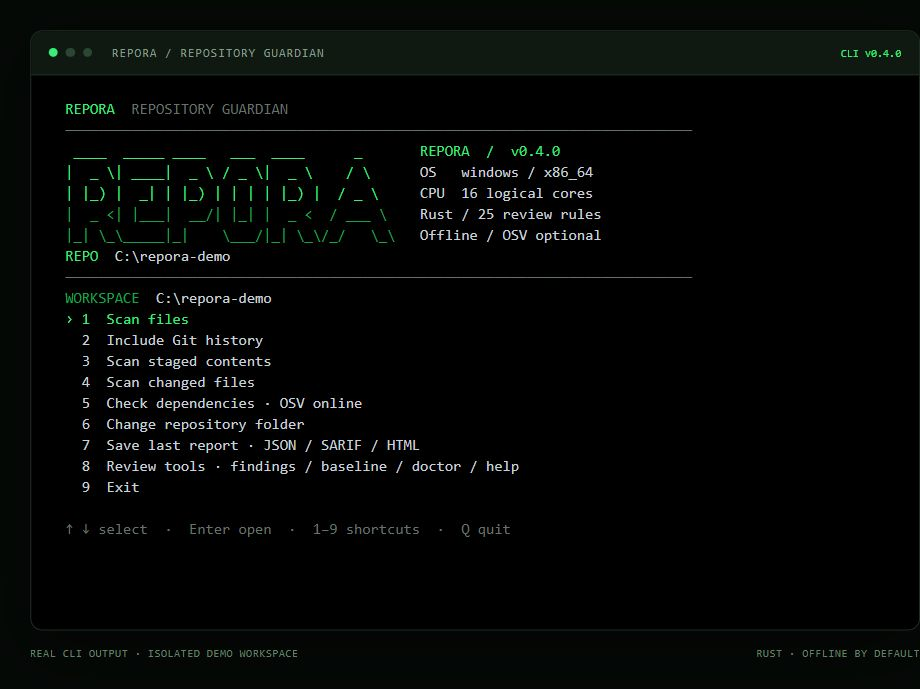
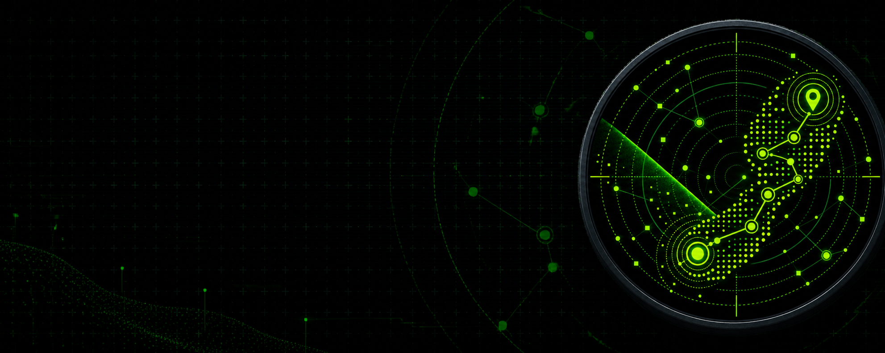
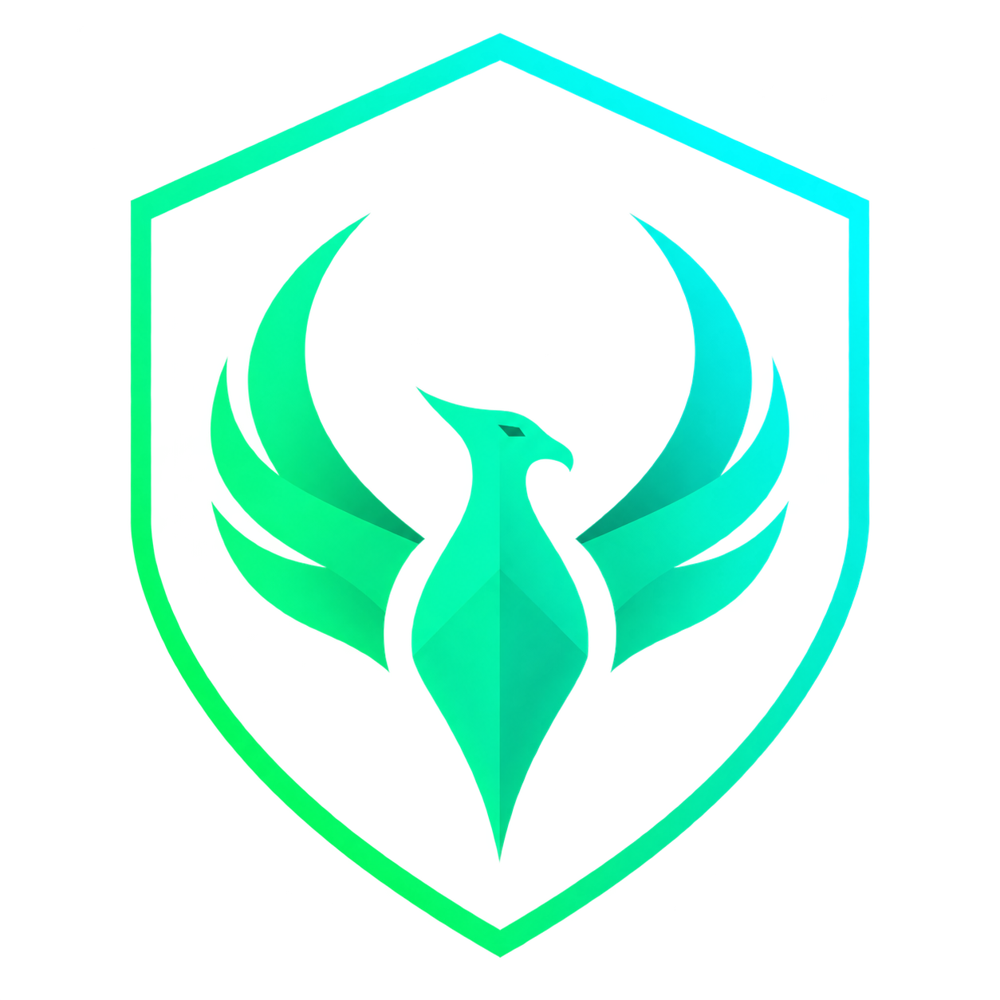
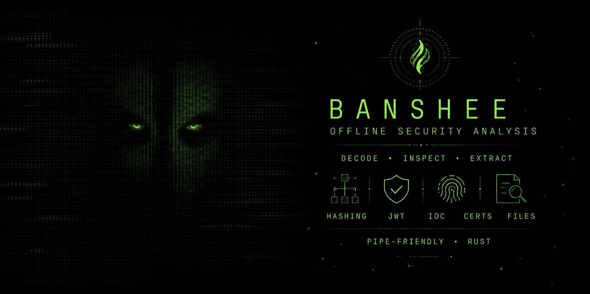

01
Siber güvenlik
Sistemleri anlamak, güvenlik açıklarını araştırmak ve daha güvenli çözümler geliştirmek.
$ whoami@dRafaleD
Backend geliştirme. Siber güvenlik.
Siber güvenlik, Linux sistemleri ve güvenli yazılım geliştirme üzerine çalışıyorum. OSINT, dosya analizi ve e-posta güvenliği için açık kaynak araçlar geliştiriyorum.

Eren Erdoğan / dRafaleD
Ben Eren Erdoğan. GitHub'da dRafaleD kullanıcı adıyla projelerimi paylaşıyorum. Backend geliştirme öğrencisiyim; çalışmalarımın odağında siber güvenlik, Linux sistemleri ve güvenli yazılım geliştirme bulunuyor. Sunucu tarafındaki uygulama mantığıyla birlikte, bu uygulamaların güvenliğini ve üzerinde çalıştığı sistemleri de ele alıyorum.
Web uygulama güvenliği, sızma testi, güvenlik açığı değerlendirmesi ve güvenli kod incelemesi üzerine kendimi geliştiriyorum. OSINT ve dijital ayak izi araştırmaları, zararlı yazılım analizi, tersine mühendislik ve ikili dosya analizi de çalıştığım alanlar arasında. Ağ güvenliği, Linux sistemlerinin sıkılaştırılması ve kriptografinin temel kavramları üzerine çalışmalar yapıyorum.
Bu konuları kendi araçlarımı geliştirerek uygulamaya taşıyorum. AsphDex ile şüpheli dosyaların statik analizine, Trackher ile dijital ayak izi ve gizliliğe, FhniX ile kimlik avı e-postalarının incelenmesine odaklanıyorum. REPORA kod depolarındaki güvenlik risklerini incelemek için, Banshee ise yerel dosya ve içerik analizini raporlamak için geliştirdiğim projeler arasında.
Geliştirme tarafında Python, Rust ve JavaScript ağırlıklı projeler üzerinde çalışırken full-stack geliştirme becerilerimi de ilerletiyorum. GitHub profilimde yer verdiğim teknoloji alanları; web arayüzleri, backend framework'leri, ilişkisel ve doküman tabanlı veritabanlarını kapsıyor. Git ve Linux, geliştirme ve analiz çalışmalarımın ortak araçları.
Şu sıralar ileri web uygulama güvenliği, zararlı yazılım analizi ve tersine mühendislik, Linux ve ağ güvenliği ile güvenli API ve backend mimarisi üzerine yoğunlaşıyorum. Güvenlik araştırmalarımı ve testlerimi yalnızca yetkili olduğum ortamlarda yürütüyorum.
Güvenlik araştırmalarımın ve yazılım projelerimin odak noktaları.
Sistemleri anlamak, güvenlik açıklarını araştırmak ve daha güvenli çözümler geliştirmek.
Backend uygulamaları, komut satırı araçları, masaüstü arayüzleri ve otomasyonlar geliştirmek.
Dijital izleri takip etmek, dosyaları incelemek ve görünenin arkasındaki yapıyı keşfetmek.
Dosya analizi, dijital gizlilik, e-posta ve kod güvenliği için geliştirdiğim araçlar.

Şüpheli dosyaları çalıştırmadan incelemek için geliştirilen statik zararlı yazılım analiz aracı.

Kod depolarındaki hassas dosyaları, açığa çıkmış sırları ve riskli yapılandırmaları inceleyen CLI aracı.

Kendi dijital ayak izini araştırmak ve gizliliğini değerlendirmek için açık kaynak araç seti.

Şüpheli e-postaları yerel olarak inceleyen; masaüstü arayüzü, açıklanabilir bulgular ve raporlarla kimlik avı analizini kolaylaştıran araç.

Dosyaları, günlükleri ve şüpheli içerikleri çevrimdışı inceleyen; bulguları açıklanabilir raporlara ve doğrulanabilir kanıt paketlerine dönüştüren güvenlik araç seti.
Savunma odaklı güvenlik araçlarından adım adım ilerleyen öğrenme laboratuvarlarına kadar, profilimdeki diğer açık kaynak repolar.
Linux için Rust ile yazılmış, savunma odaklı statik dosya triyaj CLI aracı.
dRafaleD /strace kayıtlarını güvenlik odaklı davranış özetlerine dönüştüren hafif bir Linux CLI aracı.
dRafaleD /Canlı dosya sistemleri ve TSK disk imajları için MACB zaman damgalarından adli zaman çizelgesi çıkaran Linux tarayıcısı.
dRafaleD /DNS, HTTP, TLS parmak izleri ve tarama/beacon sezgileriyle çalışan çevrimdışı PCAP/PCAPNG analizcisi.
dRafaleD /Ghidra'da neye baktığını, bunun neden önemli olduğunu ve sırada neyi kontrol etmen gerektiğini anlatan öğrenme yardımcısı.
dRafaleD /Zararsız test dosyaları ve çift motorlu doğrulamayla desteklenen, kategorilere ayrılmış özgün YARA kuralları.
dRafaleD /Token açısından verimli, savunma odaklı siber güvenlik Agent Skill koleksiyonu.
dRafaleD /C, assembly, bellek, ikili dosya formatları ve hata ayıklamayla temelden başlayan tersine mühendislik yolculuğu.
dRafaleD /Canlı örnek barındırmayan; kavramları araçlardan önce öğreten iki dilli zararlı yazılım analizi öğrenme yolu.
dRafaleD /Küçük ve güvenli lab çalışmalarıyla YARA'yı temelden itibaren adım adım öğrenme günlüğü.
dRafaleD /Zafiyetlere geçmeden önce HTTP, oturum ve kimlik doğrulama gibi temelleri inceleyen uygulamalı web güvenliği labları.
dRafaleD /Ağların nasıl çalıştığını komut ezberlemek yerine trafiği gözlemleyerek anlamaya odaklanan ağ güvenliği labları.
dRafaleD /Dijital delilin korunması, doğrulanması, incelenmesi ve belgelenmesi üzerine uygulamalı adli bilişim labları.
dRafaleD /LLM uygulamalarının yapısını, güven sınırlarını ve prompt injection gibi riskleri inceleyen yapay zekâ güvenliği labları.
dRafaleD /Kodlama ajanları için temiz, deterministik ve yapay zekâya hazır repo bağlamı üretir; isteğe bağlı yerel Ollama desteği sunar.
dRafaleD /Herkese açık GitHub aktiviteni README'ler için estetik SVG kartlara dönüştüren hafif bir CLI.
dRafaleD /Görselleri, metinleri, GIF'leri ve videoları şık terminal sanatına dönüştürür.
dRafaleD /Project Zomboid için zombi ve düşman hayatta kalan öldürmelerini ayrı ayrı sayan, rütbe sistemli bir mod.
Kaynak kodlarım ve proje dokümantasyonlarım GitHub profilimde; diğer çalışmalarım ve bağlantı bilgilerim LinkedIn profilimde yer alıyor.